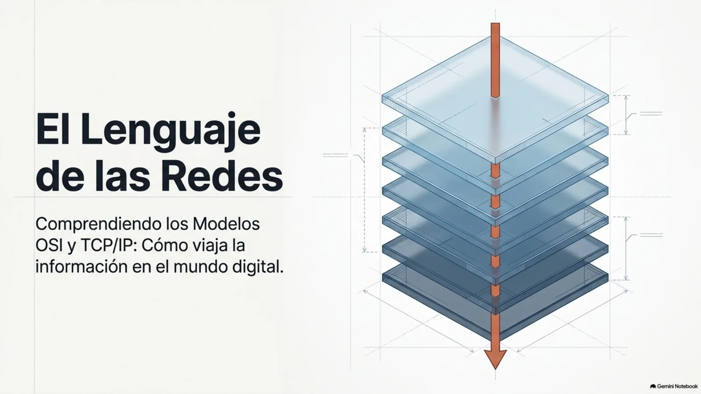
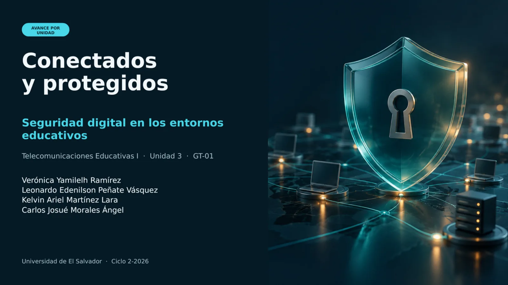
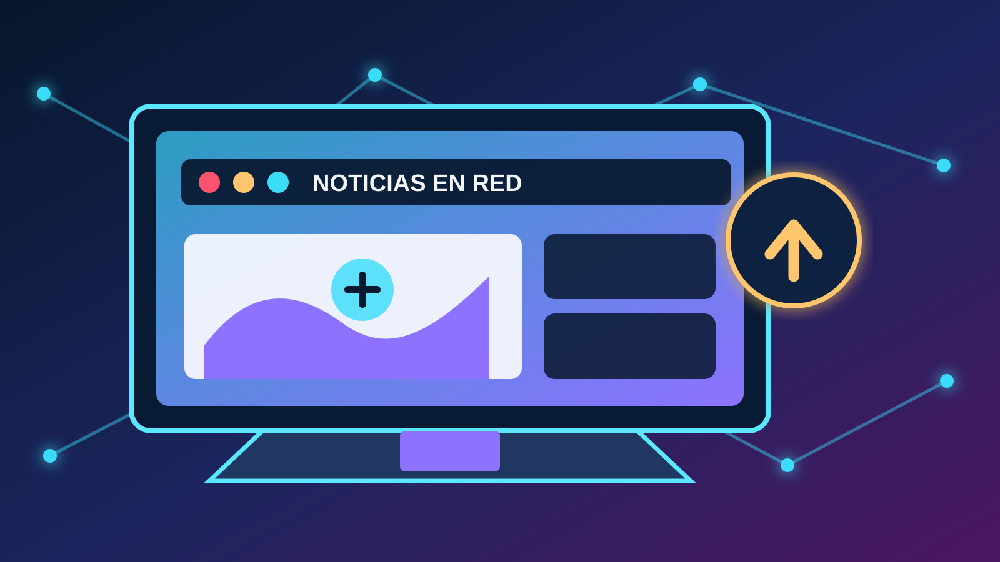

Investigar
Selección y verificación de conceptos, fuentes y ejemplos relevantes.
Universidad de El Salvador · Ciclo II-2026
Un recorrido audiovisual por los fundamentos de las redes, la seguridad digital, la ciudadanía en Internet, la tecnología educativa y el Internet de las Cosas, desarrollado colaborativamente en Telecomunicaciones Educativas I.
Ruta de aprendizaje
Cada unidad reúne su video, síntesis, productos académicos y declaración de herramientas digitales e inteligencia artificial.

Las siete capas y el recorrido de la información en una red.
Abrir unidad →
Dispositivos, medios, protocolos y el viaje digital de los datos.
Abrir unidad →
Riesgos, protección de datos y prácticas seguras en educación.
Abrir unidad →Evolución, aplicaciones y administración responsable para aprender.
Abrir unidad →
Noticias en Red: educación, pensamiento crítico, seguridad y convivencia digital.
Abrir unidad →
El despertar del mundo conectado: hogar inteligente, movilidad, oficina automatizada y uso responsable.
Abrir unidad →Cómo trabajamos
Del análisis del contenido a la publicación: una secuencia de producción con responsabilidades compartidas.
Selección y verificación de conceptos, fuentes y ejemplos relevantes.
Organización de objetivos, secuencias narrativas y recursos visuales.
Grabación, edición, narración y construcción de materiales de apoyo.
Publicación, coevaluación y reflexión sobre el proceso de producción.
Seis producciones audiovisuales vinculadas con los contenidos de cada unidad trabajada.
Guiones, presentaciones, avances, resúmenes y referencias organizados por unidad.
Integración de productos, roles, aprendizajes, dificultades y recomendaciones finales.
Siguiente paso
Antecedentes, alcance, criterios éticos, evaluación y entregables.